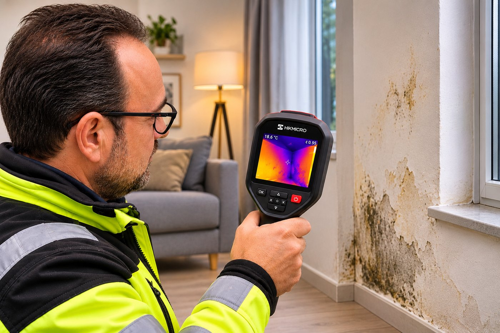

ΝΕΑ ΥΠΗΡΕΣΙΑ
Εντοπίζουμε τις θερμικές ανωμαλίες. Διερευνούμε την αιτία. Προτείνουμε τη σωστή λύση — πριν προχωρήσετε σε οποιαδήποτε εργασία επισκευής.

ΠΩΣ ΒΟΗΘΑΕΙ
Διερεύνηση πιθανής εισροής νερού και προβλημάτων στεγάνωσης.
Έλεγχος για θερμικές ανωμαλίες που μπορεί να συνδέονται με υγρασία.
Διερεύνηση πιθανών διαρροών σε υδραυλικές εγκαταστάσεις.
Εντοπισμός ύποπτων περιοχών που χρειάζονται περαιτέρω έλεγχο.
Η ΔΙΑΔΙΚΑΣΙΑ
Πραγματοποιούμε θερμογραφική σάρωση του χώρου.
Καταγράφουμε τις θερμικές ανωμαλίες με θερμικές φωτογραφίες.
Αξιολογούμε τα ευρήματα και, όπου απαιτείται, πραγματοποιούμε συμπληρωματικές μετρήσεις υγρασίας.
Παραδίδουμε φωτογραφική αναφορά με τα ευρήματα και τις προτεινόμενες ενέργειες.
ΓΙΑΤΙ GREEN HOME UPGRADE
Με τη χρήση θερμικής απεικόνισης εξετάζουμε επιφάνειες και δομικά στοιχεία, αναζητώντας θερμικές ανωμαλίες που ενδέχεται να σχετίζονται με προβλήματα υγρασίας, εισροή νερού ή πιθανές διαρροές.
Στόχος μας δεν είναι απλώς να καλύψουμε ένα πρόβλημα, αλλά να διερευνήσουμε την πιθανή αιτία του και να προτείνουμε την κατάλληλη λύση στεγάνωσης ή αποκατάστασης — αξιοποιώντας την εμπειρία μας στη στεγάνωση και την πολυουρία.
Μία τεχνική διευκρίνιση: η θερμοκάμερα εντοπίζει θερμικές διαφορές, όχι απευθείας το νερό. Τα ευρήματα χρειάζονται αξιολόγηση και, όπου απαιτείται, επιβεβαίωση με συμπληρωματικές μετρήσεις υγρασίας.
Πριν πληρώσετε για επισκευές, ελέγξτε τι συμβαίνει.